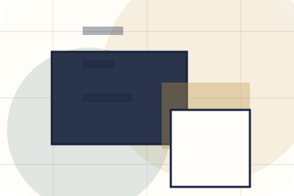
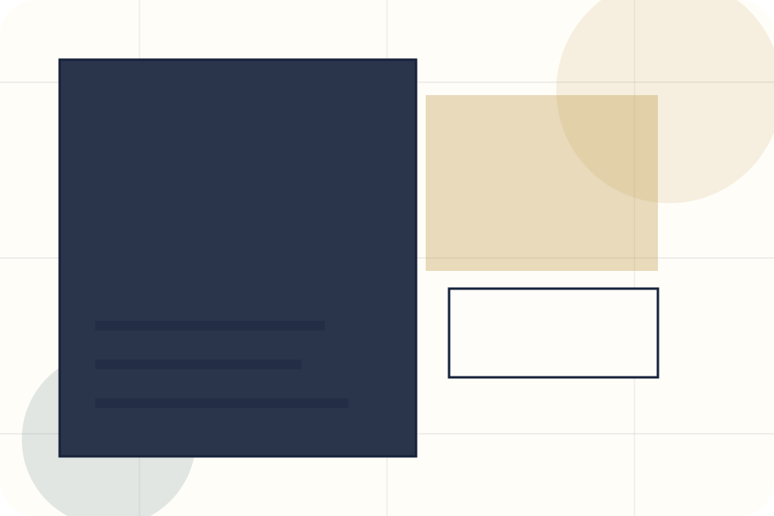
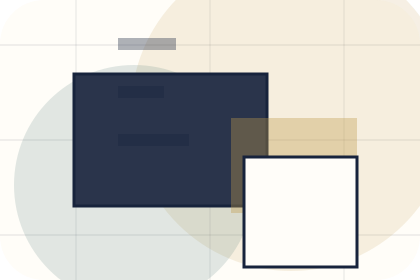
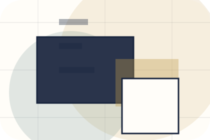
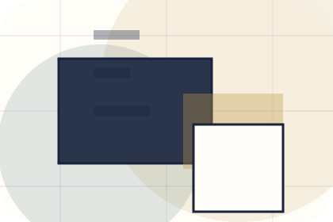
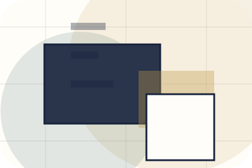
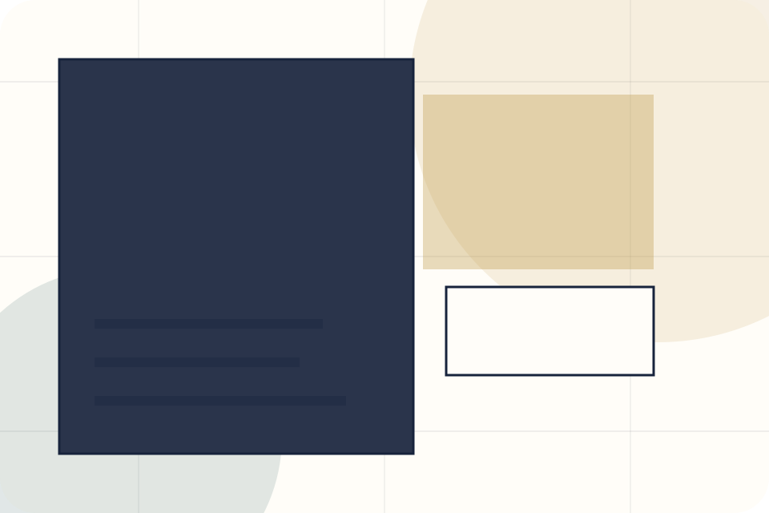
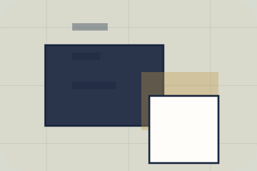

Better State
Promise defines what becomes clearer, easier, or safer when Brand is the chosen route.
Newsletter / 01
Newsletter opens as a clear personal brands decision hub: what Brand offers, who it helps, why it matters, and which route to take first.
The first screen combines positioning, proof, primary action, and fast internal navigation, so people can act immediately or compare the rest of the newsletter route with context.
Editorial author hero
Select the closest route and Brand keeps the next step, proof, and follow-up expectation aligned with authority and booking confidence.

Newsletter / 02
Promise defines the better state Brand is built to create, with enough detail to make the promise believable.
A personal brand site with editorial essay rhythm, speaking/media cards, newsletter conversion, and booking clarity. The section grounds that direction in concrete benefits, visible tradeoffs, and a next route visitors can use when the promise feels relevant.
Explore Newsletter
Promise defines what becomes clearer, easier, or safer when Brand is the chosen route.

The benefit is tied to authority and booking confidence, not a vague quality claim.

Visitors get a linked path to compare the promise against services, standards, or examples.
Newsletter / 03
Topics gives researching visitors a practical route into guides, checklists, and comparison material without leaving the site structure.
Each resource behaves like a useful internal link, giving cold and warm visitors a way to learn, compare, and return to the action path.
Explore NewsletterA useful entry point for visitors who need more context before they book an appearance.
A scannable comparison aid that makes research usable before the next decision.
A route back to support, services, or contact when the visitor is ready to act.
Newsletter / 04
Frequency gives researching visitors a practical route into guides, checklists, and comparison material without leaving the site structure.
Each resource behaves like a useful internal link, giving cold and warm visitors a way to learn, compare, and return to the action path.
Explore NewsletterA useful entry point for visitors who need more context before they book an appearance.
A scannable comparison aid that makes research usable before the next decision.
A route back to support, services, or contact when the visitor is ready to act.
Newsletter / 05
Samples gives researching visitors a practical route into guides, checklists, and comparison material without leaving the site structure.
Each resource behaves like a useful internal link, giving cold and warm visitors a way to learn, compare, and return to the action path.
Explore NewsletterBrand structures samples around guide, checklist, and a clear next route so visitors can compare the block quickly before they book an appearance.
Book AppearanceNewsletter / 06
Benefits defines the better state Brand is built to create, with enough detail to make the promise believable.
A personal brand site with editorial essay rhythm, speaking/media cards, newsletter conversion, and booking clarity. The section grounds that direction in concrete benefits, visible tradeoffs, and a next route visitors can use when the promise feels relevant.
Explore Newsletter

Benefits defines what becomes clearer, easier, or safer when Brand is the chosen route.
Newsletter / 07
Form makes the contact path concrete: what to send, how the response works, and what Brand needs before visitors book an appearance.
The section reduces contact friction by naming the channel, expected detail, privacy path, and response expectation instead of dropping visitors into a generic form.
Explore NewsletterBrand keeps form practical: send the key details, choose the right contact route, and know what kind of reply to expect.
Book Appearance
Newsletter / 08
Archive gives researching visitors a practical route into guides, checklists, and comparison material without leaving the site structure.
Each resource behaves like a useful internal link, giving cold and warm visitors a way to learn, compare, and return to the action path.
Explore NewsletterA useful entry point for visitors who need more context before they book an appearance.
A scannable comparison aid that makes research usable before the next decision.
A route back to support, services, or contact when the visitor is ready to act.
Newsletter / 10
Brand closes the newsletter route with a clear action, a quick reminder of the value, and a low-friction way to book an appearance.
Visitors who are ready can use the primary action. Visitors who are still comparing can scan the section links, proof, and support routes before they book an appearance.
Book AppearanceThe final block keeps the choice simple: act now, compare one more proof route, or send enough detail for a focused response.
Book Appearanceauthority and booking confidence
A personal brand site with editorial essay rhythm, speaking/media cards, newsletter conversion, and booking clarity. Newsletter ends with a direct path to book an appearance, plus enough context for visitors who still need to compare.

Book AppearanceInformation is provided for planning and should be reviewed for the final client, location, and operating rules.